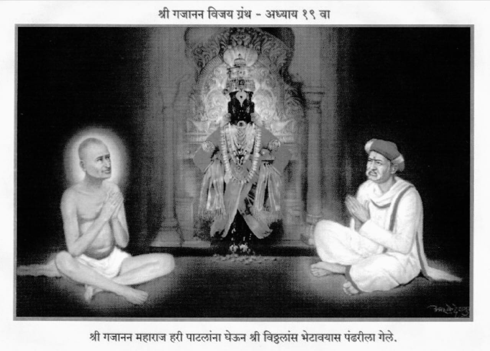

॥ अध्याय १९ ॥

।।श्रीगणेशाय नमः।।
जयजयाजी आनंदकंदा ।
जयजयाजी अभेदा ।
माझें नमन तुझ्या पदा ।
असो सर्वदा अनन्यभावें ।।१।।
हे राघवा रघुपती ।
पाव आतां शीघ्र गती।
माझा अंत पहाशी किती?।
हें कांहीं कळेना ।।२।।
खऱ्या थोराशीं कठोरता ।
नाहीं शोभत अनंता ।
याचा विचार कांहीं चित्ता ।
करा आपुल्या ये काळीं ।।३।।
मी दीनवाणें मारितों हांका।
मला दगा देऊं नका।
हे जगदीशा जगन्नायका।
पावा दासगणूस ।।४।।
महाराज असतां शेगांवांत ।
विप्र एक काशिनाथ।
जो खंडेरावाचा होय सुत ।
गर्दे उपनांव जयाचें ।।५।।
तो आला दर्शना ।
समर्थांच्या वंदिले चरणां।
मूर्ति पाहून त्याच्या मना।
आनंद झाला अतिशय ।।६।।
माझ्या सन्माननीय वडिलानें।
जीं जीवन्मुक्ताचीं लक्षणें ।
लिहिलीं अनुभवानें ।
त्याची प्रत्यक्ष मूर्ति ही ।।७।।
माझें भाग्य धन्य धन्य।
म्हणून हें पाहण्या चरण।
आलों खामगांवाहून।
त्याचें सार्थक झालें कीं ।।८।।
तो समर्थांनीं लीला केली।
कोपरखिळी मारली।
काशिनाथाच्या पाठीस भली।
आपुल्या परमकृपेनें ।।९।।
जा तुझा हेत पुरला।
वाट पाहे तारवाला।
या भाषणें घोंटाळला।
काशिनाथ मानसी ।।१०।।
म्हणे काम ना माझें ये ठाईं।
मी न आलों मागण्या कांहीं।
तारवाला शिपाई।
वाट पहातो काय हें ? ।।११।।
त्याचें गूढ कळेना ।
पुसण्या छाती होईना।
निमुटपणें वंदून चरणा ।
गेला निघून खामगांवीं ।।१२।।
तों तारवाला शिपाई ।
उभा दारांत होता पाही ।
तार घेतली घाई घाई।
कशाची ती बघण्यास ।।१३।।
तारेंत हा मजकूर।
तुमचा केला तक्रूर।
मुनसफीच्या हुद्दयावर।
मोर्शी तालुक्याकारणें ।।१४।।
तें पाहतां आनंदला ।
कोपरखिळीचा अर्थ कळला।
त्या काशिनाथपंताला ।
पहा संतांचें ज्ञान कैसें? ।।१५।।
असो एकदा नागपुरीं ।
समर्थांची गेली स्वारी ।
गोपाळ बुटीचिया घरीं।
त्याच्या अति आग्रहानें ।।१६।।
ही भोसल्याची राजधानी ।
पूर्वकालीं होती जाणी ।
त्या शहराची आज दिनीं।
दैना झाली विबुध हो ।।१७।।
स्वातंत्र्यरूपी प्राण गेला ।
खरा धनी याचक ठरला ।
परक्यांचा बोलबाला ।
झाला जया शहरांत ।।१८।।
गज घोडे पालख्या अपार।
नाहींशा झाल्या साचार।
रस्त्यानें फिरे मोटार ।
अति जोराने विबुध हो ।।१९।।
असो हा महिमा काळाचा।
नाहीं दोष कवणाचा।
वाडा गोपाळ बुटीचा।
होता सीताबर्डीवर ।।२०।।
त्या भव्य सदनांत ।
नेऊन ठेविले सद्गुरुनाथ।
जैसा वाघ किल्ल्यांत ।
कोंडोनिया टाकावा ।।२१।।
बुटीचा ऐसा विचार।
या सीताबर्डीवर।
महाराज ठेवावे निरंतर।
जाऊं न द्यावें शेगांवा ।।२२।।
अक्रुरानें कृष्णाला ।
जैसा मथुरेमाजीं नेला।
तोच प्रकार येथें झाला।
काय वर्णन करावें ? ।।२३।।
शेगांव पडलें भणभणीत ।
अवघे लोक दुःखित।
विनविती हरी पाटलाप्रत।
महाराज येथें आणा हो ।।२४।।
कुडीमधून गेला प्राण।
कोण पुसे तिजलागुन?।
तैसें समर्थांवांचून।
शेगांव हें प्रेत पाहा ।।२५।।
तुम्हीं गांवचे जमेदार ।
करा याचा विचार।
बुटी मोठा सावकार।
तेथें न आमुचा लाग लागे ।।२६।।
टक्कर हत्तीहत्तींची ।
होणें आहे योग्य साची।
येथें आम्हांसम कोल्ह्यांची।
नाहीं मुळीं किंमत ।।२७।।
जंबुमाळीसी लढायाला ।
मारुती हाच योग्य ठरला ।
जिंकावया कर्णाला ।
झाली योजना अर्जुनाची ।।२८।।
तुम्हीं नागपुराप्रती जावें ।
समर्थांसी घेऊन यावें ।
आम्हां अवघ्यांस सुखवावें।
हीच आहे विनंति ।।२९।।
इकडे बुटीच्या घरांत ।
आजुर्दे राहिलें संत।
जेवीं हस्तिनापुरांत ।
कृष्ण नाहीं आनंदला ।।३०।।
महाराज म्हणती बुटीसी।
जाऊं दे मज शेगांवासी।
या आपुल्या भव्य सदनासी ।
ठेवून आम्हां घेऊं नको ।।३१।।
तें बुटी मुळींच मानीना ।
समर्था जाऊं देईना।
अनागोंदीचा रामराणा ।
बुटी वाटे निःसंशय ।।३२।।
बुटी भाविक होता जरी।
अहंता नव्हती गेली खरी।
श्रीमंतीचा गर्व भारी ।
त्याच्या ठाईं वसतसें ।।३३।।
रोज ब्राह्मणभोजन ।
समर्थांपुढे सदा भजन ।
परी शेगांवचे येत जन ।
बंदी त्या तो करीतसे ।।३४।।
जाऊं न देई दर्शना।
शेगांवचे लोकांना ।
बिगरपरवानगी श्रीमंतसदना।
जातां नये कवणासी ।।३५।।
शेगांवचे लोक भले ।
जरी आणावया गेले ।
परी न कांही उपाय चाले।
गेले तसेंच आले परत ।।३६।।
इकडे भक्त पाटील हरी।
कांहीं मंडळीं बरोबरी।
घेऊन निघाला नागपुरीं।
समर्थांसी आणावया ।।३७।।
बसला अग्निरथांत ।
त्याच वेळीं वदलें संत।
त्या गोपाळ बुटीप्रत।
येणें रीति तें ऐका ।।३८।।
अरे गोपाळा ! पाटील हरी।
निघाला यावया नागपुरीं।
तो येण्याच्या आंत परी।
मला येथून जाऊं दे ।।३९।।
तो येथें आल्यावर ।
शांतता नाहीं राहणार ।
तो पडला जमेदार।
याचा विचार करावा ।।४०।।
तुझ्या धनाच्या जोरावरी ।
उड्या या जाण निर्धारी।
तो मनगटाच्या बळावरी।
नेईल मजला येथून ।।४१।।
हरी पाटील तेथें आला ।
शिपायानें अटकाव केला।
परी तो न त्यानें मानिला।
प्रवेश केला सदनांत ।।४२।।
गोपाळ बुटीचिया घरीं ।
पंगत होती थोर खरी ।
पाटील आल्याच्या अवसरीं।
आले ब्राह्मण भोजना ।।४३।।
ताटें चांदीचीं अवध्यांस ।
शिसमचे पाट बसण्यास ।
होत्या पातळ पदार्थांस।
वाट्या जवळ चांदीच्या ।।४४।।
नानाविध पक्कान्नें।
होती भोजनाकारणें।
मध्यभागा आसन त्यानें।
मांडिले समर्थ बसण्यास ।।४५।।
ऐशी बुटीची श्रीमंती।
तिचे वर्णन करूं किती ?।
ज्याला कुबेर बोलती।
लोक नागपूर प्रांतींचा ।।४६।।
असो हरी पाटील सदनांत।
आले समर्था नेण्याप्रत।
तों महाराज निघाले धांवत।
द्वारीं त्यास भेटावया ।।४७।।
वांसरा गाय पाहून ।
जैसी येई धांवून ।
तैसे स्वामी गजानन।
पाटलासाठीं धांवलें ।।४८।।
चाल हरी शेगांवासी ।
येथे मुळी न राहणें मसी।
तूं आलास न्यावयासी ।
हें फार बरें झालें ।
।।४ ९।।
समर्थ जाऊं लागले ।
ते गोपाळाने पाहिले ।
अनन्यभावें चरण धरिले ।
समर्थांचे येऊन ।।५०।।
विक्षेप माझा गुरुराया !।
नका करूं या समया ।
दोन घांस घेऊनिया।
इच्छित स्थला मग जावें ।।५१।।
तैसेंच बुटी पाटलासी।
बोलूं लागले विनयेसी ।
तुम्ही घेऊन प्रसादासी।
जावें हेंच मागणें ।।५२।।
येथें न रहाती महाराज।
हें समजून आलें आज ।
पंक्तित माझी राखा लाज ।
तुम्हीच पाटील येधवां ।।५३।।
आत्तांच समर्थ गेले जरी।
लोक उपाशी उठतील तरी।
आणि अवघ्या नागपुरीं।
टीका माझी होईल पहा ।।५४।।
भोजनें होईपर्यंत ।
महाराज राहिले तेथ ।
शेगांवची समस्त।
मंडळी पंक्तीस जेवली ।।५५।।
भोजनोत्तर तयारी ।
निघण्याची ती झाली खरी।
दर्शनाची भीड भारी।
झाली बुटीच्या वाड्यांत ।।५६।।
कुटुंब गोपाळ बुटीचें।
जानकाबाई नांवाचें।
परम भाविक होतें साचें।
गृहलक्ष्मीच होती जी ।।५७।।
तिनें केली विनवणी।
महाराजांचे चरणीं ।
माझा हेतु मनींच्या मनीं।
बसूं पाहतो गुरुराया ! ।।५८।।
तईं महाराज बोलले ।
तुझ्या मना मीं जाणीतलें।
ऐसें म्हणून लाविलें।
कुंकूं तिच्या कपाळास ।।५९।।
आणखी एक पुत्र तुला।
परम सद्गुणी होईल भला।
अंती जाशील वैकुंठाला ।
सौभाग्यासह बाळे तूं ! ।।६०।।
ऐसा आशीर्वाद देऊन।
निघते झाले दयाघन ।
त्या सीताबर्डींहून।
आले रघुजीच्या घरीं ।।६१।।
हा भोसला राजा रघुजी।
उदार मनाचा भक्त गाजी।
ज्यानें ठेविला राम राजी।
आपुल्या शुद्ध वर्तनें ।।६२।।
त्याचें लौकिकीं राज्य गेलें।
जें अशाश्वत होतें भलें ।
शाश्वत स्वरूपाचें आलें।
सद्गुरुभक्तीचें राज्य घरा ।।६३।।
उत्तम प्रकारचा आदर ।
केला राजानें साचार।
त्याचा घेऊन पाहुणचार ।
रामटेकासी गेले पुढें ।।६४।।
तेथें रामाचें दर्शन ।
घेऊन आले परतून ।
शेगांवाच्या मठा जाण।
हरी पाटलासमवेत ।।६५।।
धार-कल्याणचे रंगनाथ।
जे थोर साधु मोंगलाईत।
होते ते भेटण्याप्रत ।
समर्थां आले शेगांवीं ।।६६।।
अध्यात्माचीं बोलणीं ।
सांकेतिक केलीं दोघांनी।
त्याचा भावार्थ जाणण्या कोणी ।
तेथें नव्हता समर्थ ।।६७।।
श्रीवासुदेवानंदसरस्वती।
कर्ममार्गी ज्याची प्रीति ।
कृष्णातटाका ज्यांची महती ।
माणगांवी जन्म ज्यांचा ।।६८।।
ते येण्याचे अगोदर।
बाळाभाऊस साचार ।
बोलते झाले गुरुवर।
स्वामी गजानन सिद्धयोगी ।।६९।।
अरे बाळा उदयिक।
माझा बंधु येतो एक।
मजलागीं भेटण्या देख।
त्याचा आदर करावा ।।७०।।
तो आहे कर्मठ भारी।
म्हणून उद्यां पथांतरीं।
चिंध्या न पडूं द्या निर्धारी।
अंगण स्वच्छ ठेवा रे ।।७१।।
चिंधी कोठें पडेल जरी।
तो कोपेल निर्धारी।
जमदग्नीची आहे दुसरी।
प्रतिमा त्या स्वामीची ।।७२।।
तो कन्हाडा ब्राह्मण ।
शूचिर्भूत ज्ञानसंपन्न।
हें त्याचें कर्मठपण ।
कवचापरी समजावें ।।७३।।
ऐसें बाळास आदले दिवशीं।
सांगते झाले पुण्यराशी ।
तों एक प्रहर दिवसासी।
स्वामी पातले तें ठायां ।।७४।।
एकमेकांसी पाहतां।
दोघे हंसले तत्त्वतां।
हर्ष उभयतांच्या चित्ता ।
झाला होता अनिवार ।।७५।।
एक कर्माचा सागर ।
एक योगयोगेश्वर।
एक मोगरा सुंदर।
एक तरू गुलाबाचा ।।७६।।
एक गंगा भागीरथी ।
एक गोदा निश्चिती ।
एक साक्षात् पशुपती।
एक शेषशायी नारायण ।।७७।।
स्वामी जेव्हां मठांत आले ।
तेव्हां गजानन होते बैसले ।
आपल्या पलंगावरी भले ।
चिटक्या करानें वाजवीत ।।७८।।
स्वामी येतां चिटकी थांबली ।
दृष्टादृष्ट दोघां झाली ।
तैं स्वामींनीं विचारिली।
आज्ञा परत जावया ।।७९।।
फार बरें म्हणून ।
गजाननें तुकविली मान।
स्वामी गेले निघून ।
बाळास कौतुक वाटलें ।।८०।।
बाळ म्हणे गुरुराया ।
हें दृश्य पाहूनिया।
संशय उपजला चित्ता ठायां ।
त्याची निवृत्ति करा हो ।।८१।।
त्यांचा मार्ग अगदी भिन्न ।
तुमच्या ह्या मार्गाहून।
ऐसें साच असून ।
तुमचा बंधु कसा तो ? ।।८२।।
ऐसा प्रश्न ऐकिला।
समर्थ देती उत्तर त्याला ।
बरवा प्रश्न बाळा केला।
त्वां हा आज आम्हांतें ।।८३।।
ईश्वराकडे जाण्याचे।
तीन मार्ग असती साचे ।
हे तिन्ही मार्ग ज्ञानाचे।
गांवा जाऊन मिळतात ।।८४।।
स्वरूपें त्यांचीं भिन्न भिन्न ।
दिसतीं पाहाणारांकारण ।
तेणें घोटाळा वरितें मन।
पाहाणारांचें राजसा ! ।।८५।।
सोवळें ओवळें संध्यास्नान ।
व्रत उपोषणें अनुष्ठान ।
या कृत्यांलागून।
अंगें म्हणावीं कर्माचीं ।।८६।।
ही अंगे जो आचरी।
निरालसपणें खरी ।
तोच समजावा भूवरीं।
ब्रह्मवेत्ता कर्मठ ।।८७।।
अधिक न्यून येथें होता।
कर्ममार्ग न ये हातां।
म्हणून विशेष तत्परता।
ठेविली पाहिजे आचरणीं ।।८८।।
येथें एवढीच खबरदारी।
घ्यावी लागते जाण खरी।
परांकारणें दुरुत्तरीं।
कदा त्यानें ताडूं नये ।।८९।।
आतां भक्तिमार्गाचें ।
ऐक हें लक्षण साचें।
भक्तिपंथानें जाणाराचें।
मन पाहिजे शुद्ध अती ।।९०।।
मलीनता मनाठायीं।
अंशेही राहिल्या पाही।
त्याच्या हातां येत नाहीं ।
भक्तिरहस्य बापा रे ! ।।९१।।
दया प्रेम लीनता।
अंगीं पाहिजे तत्त्वतां।
श्रवणीं पूजनीं आस्था।
पाहिजे त्याची विशेष ।।९२।।
मुखामाजीं नामस्मरण ।
करणें हरीस जाणून ।
ऐशीं अंगे असती जाण।
या भक्तिमार्गाला ।।९३।।
या अंगांसह जो भक्ती करी।
त्यालाच भेटे श्रीहरी।
भक्तिमार्गाची न ये सरी।
त्याचा विधी सोपा असे ।।९४।।
परी तो करण्या आचरण ।
कर्माहून कठीण जाण ।
जेवीं गगनाचें जवळपण ।
नेत्रांलागीं दिसतसे ।।९५।।
आतां योगमार्ग तिसरा ।
सांगतों मी ऐक खरा।
या योगमार्गाचा पसारा।
दोघांपेक्षां जास्त असे ।।९६।।
परी हा पसारा निश्चयेंसी।
आहे ज्याचा त्याचे पासीं।
योगमार्ग साधण्यासी।
बाहेरचें न कांहीं लागे ।।९७।।
जेवढें आहे ब्रह्मांडांत ।
तेवढें आहें पिंडांत ।
त्या पिंडांतील साहित्य।
घेऊन योग साधावा ।।९८।।
आसनें रेचक कुंभक ।
इडापिंगलेचे भेद देख।
धौती मुद्रा त्राटक।
कळलें पाहिजे मानवां ।।९९।।
कुंडली आणि सुषुम्ना।
यांचे ज्ञान पाहिजे जाणा।
आधी योग करणारांना ।
तरीच तो साधेल ।।१००।।
या तिन्ही मार्गांचें ।
अंतिम फळ ज्ञान साचें।
परी तें ज्ञान प्रेमाचें ।
वीण* असतां कामा नये ।।१।।
जें जें कृत्य प्रेमावीण।
तें तें अवघें आहे शीण ।
म्हणून प्रेमाचें रक्षण।
करणें तिन्ही मार्गांत ।।२।।
काळा गोरा खुजा थोर।
कुरूप आणि सुंदर ।
हे शरीराचे प्रकार।
त्याची न बाधा आत्म्यातें ।।३।।
आत्मा अवघ्यांचा आहे एक।
तेथें न पडे कदा फरक।
शरीरभेद व्यावहारिक।
त्याचें कौतुक कांहीं नसे ।।४।।
तीच या तिन्हीं मार्गांची।
स्थिति तंतोतंत साची।
बाह्य स्वरूपें भिन्न त्यांचीं।
परी मूळ कारण एक असे ।।५।।
मुक्कामास गेल्यावर ।
मार्गांचा न उरें विचार।
जो मार्गी चालतो नर।
महत्त्व त्याचें त्यास वाटे ।।६।।
पथ चालण्या आरंभ झाला।
परी मुक्कामास नाहीं गेला।
अशाचाच होतो भला ।
तंटा पंथाभिमानानें ।।७।।
या तिन्ही मार्गांचे ते पांथ ।
मुक्कामीं पोंचल्या होती संत ।
मग तयांच्या संबंधांत।
द्वैत नसे एतुलेंही ।।८।।
वसिष्ठ, वामदेव, जमदग्नी ।
अत्री, पाराशर, शांडिल्य मुनी ।
हे कर्ममार्गाच्या सेवनीं।
मुक्कामासी पोंचले ।।९।।
व्यास, नारद, कयाधूकुमर ।
मारुती, शबरी, अक्रूर ।
उद्धव, सुदामा, पार्थ, विदूर ।
हे गेले भक्तिमार्गें ।।११०।।
श्री शंकराचार्य गुरुवर।
मच्छिंद्र, गोरख, जालंदर ।
हे चढले जिना थोर।
या योगमार्गाचा ।।११।।
जो वसिष्ठा लाभ झाला।
तोच विदुराच्या पदरीं पडला ।
तोच मच्छिंद्रानें भोगिला।
फळामाजीं फरक नसे ।।१२।।
तीच प्रथा पुढें चालली।
येथें न शंका घ्यावी मुळीं।
कर्ममार्गाची रक्षिली।
बूज श्रीपादवल्लभें ।।१३।।
नरसिंहसरस्वती यतिवर ।
तैसेच झाले साचार।
ठिकाण ज्यांचे गाणगापूर।
वाडी, औदुंबर ख्यात जगीं ।।१४।।
नामा, सावता, ज्ञानेश्वर।
सेना, कान्हु, चोखा महार।
दामाजीपंत ठाणेदार।
गेले भक्तिमार्गांनीं ।।१५।।
शेख महंमद श्रीगोंद्यांत।
आनंदी स्वामी जालन्यांत ।
सुर्जीअंजनगांवांत।
देवनाथ चाहाते योगाचे ।।१६।।
तैसेंच आहे सांप्रत ।
कर्ममार्गी वासुदेव रत।
मी धरला भक्तिपंथ।
आणिक बहुता जणांनीं ।।१७।।
पळुसचे धोंडीबुवा।
सोनगीरचा नाना बरवा।
जालन्याचें यशवंतरावा ।
भक्तिपंथ साध्य झाला ।।१८।।
खाल्ला आम्मा ती विदेही।
तेंवीं शिर्डीचे बाबा साई।
गुलाबरावांचें ठायीं।
ज्ञानदृष्टि असे रे ।।१९।।
पहा चांदूर तालुक्याचा ।
वरखेडें नामें ग्रामाचा।
आडकूजी नामें संत साचा।
गेला याच वाटेनें ।।१२०।।
मुन्हा गांवचें संतरत्न ।
झिंग्राजी तो होय जाण ।
तेवीं नागपूरचे ताजुद्दीन।
भक्तिमार्गासी चाहाते ।।२१।।
या अवघ्या संतांचें ।
आचरण भिन्न प्रकारचें।
परी अधिकारी कैवल्याचे।
ते बैसले होऊनी ।।२२।।
मार्ग असो कोणताही।
त्याचें मुळीं महत्त्व नाहीं ।
जो मुक्कामास जाई।
त्याचें कौतुक करणें असे ।।२३।।
आम्ही ही भावंडें सारी ।
येतों झालों भूमिवरी।
कैवल्याच्या मार्गावरी ।
भाविक आणून सोडावया ।।२४।।
जें ज्याला आवडेल ।
तिकडे तो जाईल।
आणि मोक्षरूपी भोगील फल।
त्या त्या पंथा आचरोनी ।।२५।।
आतां नको पुसूंस कांहीं।
हें न कोणा सांगे पाही।
निवांत बसूं दे ये ठायीं।
पिसेंपणाच्या पासोडीनें ।।२६।।
ज्याची निष्ठा बसेल ।
वा ! जो माझा असेल ।
त्याचेंच कार्य होईल।
इतरांची ना जरूर मला ।।२७।।
ज्यासी अनुताप झाला ।
ब्रह्मज्ञान सांगणे त्याला।
उगीच तर्कटी वात्रटाला।
स्फोट त्याचा करूं नये ।।२८।।
कोणी कांहीं म्हणोत ।
आपण असावें निवांत।
तरीच भेटे जगन्नाथ ।
जगद्गुरू जगदात्मा ।।२९।।
ऐसा उपदेश ऐकिला।
बाळाभाऊच्या नेत्रांला ।
प्रेमाश्रूंचा लोटला ।
पूर तो न आवरे त्या ।।१३०।।
अष्टभाव दाटले ।
शरीरा रोमांच उमटले।
वैखरीचें संपलें।
काम तेणें सहजची ।।३१।।
मौनेंच केला नमस्कार ।
श्रीगजानन साधु थोर।
वन्हाड प्रांताचा उद्धार ।
करावयासी अवतरला ।।३२।।
साळुबाई नांवाची ।
एक असे कण्व शाखेची।
ती होती महाराजांची।
मनापासून भक्तिण ।।३३।।
तिला महाराज एके दिनीं ।
ऐशा परी वदले वाणी।
डाळ पीठ घेऊनी ।
स्वयंपाक करी अहोरात्र ।।३४।।
जे येतील तयांना।
साळु घाल भोजना ।
येणेच तूं नारायणा।
प्रिय होशील निःसंशय ।।३५।।
ती साळुबाई मठांत ।
आहे अजूनपर्यंत।
जी वैजापूरची असे सत्य ।
माहेर वाडेंघोडें जिचें ।।३६।।
प्रल्हादबुवा जोशाला ।
होता कृपेचा योग आला।
तो न तया फलद झाला।
तयाचिया दुर्दैवें ।।३७।।
खामगांवच्या सान्निध्यासी।
जलंब गांव परियेसी ।
त्या गांवचा रहिवासी।
तुळशीराम एक असे ।।३८।।
पुत्र या तुळशीरामाचा।
आत्माराम नांवाचा ।
होता तैलबुद्धीचा।
वेदाध्ययनीं प्रेम ज्याचें ।।३९।।
हा धर्मपीठ वाराणसी।
जी भागीरथीच्या तटा काशी।
तेथें गेला अध्ययनासी।
वेदवेदांग स्मृतीच्या ।।१४०।।
प्रत्यहीं भागीरथीचें स्नान।
माधुकरीचें सेवी अन्न ।
गुरुगृहातें जाऊन।
करी अध्ययन श्रुतीचें ।।४१।।
श्रोते विद्यार्थी ना तरी ।
अध्ययना जाती देशावरी।
शिकण्याऐवजीं परोपरी।
करूं लागती चैन ते ।।४२।।
चैनीमाजीं गुंतल्या मन ।
मग कशाचें अध्ययन ? ।
बिरूड आंब्यालागून ।
लागतां नाश रसाचा ।।४३।।
आत्माराम नव्हता यापरी।
विवेकसंपन्न सदाचारी ।
विद्या अवघी करून पुरी।
आला निजदेशातें ।।४४।।
स्वदेशीं येतां शेगांवासी ।
गेला असे अति हर्षी ।
हजिरी ती द्यावयासी।
श्रीगजाननमहाराजा ।।४५।।
तो वेदविद्येचा जाणता।
गजानन केवळ ज्ञानसविता।
आत्माराम वेद म्हणतां।
कोठें कोठें चुकतसे ।।४६।।
त्या चुकीची दुरुस्ती।
करूं लागले सद्गुरुमूर्ती ।
आत्मारामाचे संगती ।
वेद म्हणती महाराज ।।४७।।
ऐकतां त्यांचें वेदाध्ययन ।
तन्मय होती विद्वान् ।
न होय सराफावांचून।
किंमत त्या हिऱ्याची ।।४८।।
शेवटीं समर्थांचेपाशीं।
आत्माराम राहिला आदरेंसी।
मधु टाकुनी मक्षिकेसी ।
जाणें कैसें आवडेल? ।।४९।।
प्रत्यहीं सेवेकारण ।
यावें त्यानें जलंबाहून ।
चुकविला ना एकही दिन ।
ऐसा एकनिष्ठ भक्त तो ।।१५०।।
समर्थांच्या पश्चात् ।
हाच होता मठांत।
पूजा अर्चा करण्याप्रत।
सद्गुरूंच्या समाधीची ।।५१।।
मोबदला न घेतां भली।
एकनिष्ठ सेवा केली।
शेवटीं त्यानेंच अर्पिली।
इस्टेट आपली महाराजा ।।५२।।
इस्टेट अल्प साचार।
एक जमीन एक घर।
येथें न दृष्टि किंमतीवर।
देणें आहे भाग पाहा ।।५३।।
भिल्लिणीनें रामाला ।
बोरें देऊन वश केला।
तैसाच प्रकार हाही झाला।
म्हणून केलें वर्णन ।।५४।।
स्वामी दत्तात्रय केदार।
दुसरा नारायण जामकर ।
निव्वळ दुधाचा ज्यांचा आहार ।
तो दुधाहारी बुवा ।।५५।।
ऐसे श्रोते तिघे जण ।
स्वामींचे भक्त निर्वाण।
ज्यांनी आपुलें तनमन।
समर्थचरणीं अर्पिलें ।।५६।।
मोरगांव भाकरे नांवाचा।
गांव बाळापूर तालुक्याचा।
तेथील मारुतीपंत पटवाऱ्याचा ।
वृत्तान्त ऐका थोडासा ।।५७।।
श्रोते ! त्या मोरगांवांत।
मारुतीपंताच्या शेतांत।
पिकांचें रक्षण करण्याप्रत।
तिमाजी नामें माळी होता ।।५८।।
तो माळी खळ्याभीतरीं।
निजला निशिच्या अवसरीं।
गाढ झोंप लागली खरी।
ते अवसरी तयाला ।।५९।।
उलटून गेले दोन प्रहर ।
कुंभाराचे दहावीस खर।
खळ्यांत येऊनी दाण्यावर ।
पडले असती पांड्याच्या ।।१६०।।
राखणदार झोंपी गेला।
गर्दभासी आनंद झाला।
ते खाऊं लागले जोंधळ्याला ।
राशींत तोंड घालूनी ।।६१।।
हा पांड्या मारुतीपंत।
महाराजांचा होता भक्त ।
म्हणून सद्गुरुरायाप्रत ।
लीला करणें भाग आले ।।६२।।
क्षणांत जाऊनी मोरगांवासी।
हांक मारिली तिमाजीसी ।
अरे ! जागा होई त्वरेसी ।
रासेसी गाढवें पडलीं ना ।।६३।।
ऐसें मोठ्यानें बोलून ।
तिमाजीस जागे करून ।
महाराज पावले अंतर्धान।
खळ्यामधून तेधवां ।।६४।।
तिमाजी उठून पाहतां ।
गाढवें दिसली तत्त्वतां।
म्हणे काय करूं आतां।
मालक रागे भरेल कीं ।।६५।।
पिकाचें रक्षण करण्यासी।
त्यानें ठेविलें आहे मसीं।
विश्वासघात आज दिशीं।
झाला त्याचा माझ्या हातें ।।६६।।
तो विश्वासला माझ्यावर ।
मी निजतां झालों निसूर ।
रास ही निम्यावर।
खाऊन टाकली गाढवांनी ।।६७।।
आतां समजूत मालकाची।
कोण्या रीतिं घालूं साची।
पहा त्या वेळीं इमानाची।
किंमत होती लोकांस ।।६८।।
ना तरी हल्लींचे नोकर ।
निमकहराम शिरजोर।
नफातोट्याची तिळभर ।
काळजी न त्यांना मालकाच्या ।।६९।।
तिमाजी तैसा नव्हता ।
हळहळ लागली त्याच्या चित्ता ।
म्हणे काय जाऊन सांगू आतां ।
मी पांड्याकारणें ।।१७०।।
कांहीं असो चुकीची।
माफी मागितली पाहिजे साची ।
उदार बुद्धि मारुतीची।
आहे तो क्षमाच करील ।।७१।।
ऐसें मनाशीं बोलून ।
उदयास येतां नारायण।
तिमाजी गांवांत येऊन ।
पाय धरी पंतांचे ।।७२।।
महाराज माझ्या झोंपेनीं ।
बुडविलें तुम्हांलागूनी ।
दहावीस गाढवांनी।
येऊन रास खाल्ली कीं ।।७३।।
ती नुकसान किती झाली ।
ती पाहिजे पाहिली ।
खळ्यामाजीं जाऊनि भली ।
म्हणजे मज वाटेल बरें ।।७४।।
मारुती म्हणाले त्यावर।
खळ्यांत यावया साचार ।
वेळ ना मला तिळभर।
मी निघालों शेगांवा ।।७५।।
दर्शन घेऊन सद्गुरूचें।
त्या गजानन महाराजांचें।
उद्यां सकाळीं धान्याचें।
काय झालें ते पाहीन ।।७६।।
ऐसें बोलून शेगांवाला।
मारुतीपंत येतां झाला।
दर्शनासाठी मठांत गेला ।
दहा अकराचे सुमारास ।।७७।।
महाराज होते आसनावरी।
जगू पाटील समोरी।
बाळाभाऊ बद्ध करीं।
बसला जवळ पाटलाच्या ।।७८।।
मारुतीनें दर्शन ।
घेतां केलें हास्यवदन।
तुझ्यासाठी मजकारण।
त्रास झाला रात्रीसी ।।७९।।
तुम्ही माझे भक्त होतां।
मला राखण्या लावितां।
झोपाळू नोकर ठेवितां।
आणि आपण निजतां खुशाल घरीं ।।१८०।।
मारुती काल रात्रीला।
खळ्यांत तिमाजी झोपीं गेला।
गाढवांचा सुळसुळाट झाला।
ते रास भक्षूं लागले ।।८१।।
म्हणून मी जागें केलें ।
जाऊन तिमाजीसी भले।
रास सांभाळण्या सांगितलें ।
आणि आलों निघून ।।८२।।
ऐसी खूण पटतांक्षणीं।
मारुतीनें जोडून पाणि।
मस्तक ठेवूनियां चरणीं।
ऐसें वचन बोलला ।।८३।।
आम्हां सर्वस्वीं आधार।
आपुलाच आहे साचार।
लेंकराचा अवघा भार।
मातेचिया शिरीं असे ।।८४।।
आमुचें म्हणून जें जें कांहीं।
तें अवघेंच आहे आपुले आई !।
सत्ता त्यावरी नाहीं ।
तुम्हांवीण कवणाची ।।८५।।
खळें आणि जोंधळा ।
अवघाची आहे आपला।
तिमाजी नोकर नांवाला।
व्यवहार दृष्टीं आहे कीं ।।८६।।
ब्रह्मांडाचें संरक्षण ।
आपण करितां येथून।
लेंकरासाठीं त्रास पूर्ण।
माता सोसी वरच्यावरी ।।८७।।
मी लेंकरूं आपुलें।
म्हणूनिया आपण केलें।
खळ्यांत तें जाऊन भलें।
मोरगांवी संरक्षण ।।८८।।
ऐसीच कृपा निरंतर।
स्वामी असावी माझ्यावर।
आतांच जाऊन करितों दूर।
नोकरीवरून तिमाजीला ।।८९।।
ऐसें बोलतां मारुती ।
कौतुक वाटले समर्थांप्रती।
आणि भाषण केलें येणे रीति।
तें आतां अवधारा ।।१९०।।
छे ! छे! वेड्या ! तिमाजीस।
नको मुळींच काढूंस।
नोकरीवरून खास।
त्याचे वर्म सांगतों तुला ।।९१।।
तिमाजी नोकर इमानी ।
खळ्यांत गाढवें पाहूनी ।
दुःखी झाला असे मनीं।
तें म्यां तेव्हांच जाणिलें ।।९२।।
रात्रीची हकीकत ।
तुला सांगावया प्रत ।
आला होता भीत भीत ।
सकाळी ना तुजकडे ।।९३।।
तैं तूं म्हणालास त्याला ।
मी जातों आहे शेगांवाला।
उद्यां सकाळीं खळ्याला।
येऊनिया पाहीन ।।९४।।
ऐसें गुरुवचन ऐकिलें।
मारुतीसी चोज जहालें।
पहा संतांचे कर्तृत्व भलें।
कैसें आहे अगाध ।।९५।।
गाढवें खळ्यांत पडलेली ।
कोणीं न त्या सांगितलीं।
ती अंतर्ञानें जाणिलीं ।
गजाननानें श्रोते हो ।।९६।।
शके अठराशें सोळासी।
महाराज बाळापुरासी।
असतां गोष्ट झाली ऐसी।
ती थोडकी सांगतों ।।९७।।
तेथें सुखलाल बन्सीलालाची।
एक बैठक होती साची।
त्या बैठकीसमोर महाराजांची ।
स्वारी बैसली आनंदांत ।।९८।।
मूर्ति अवघी दिगंबर।
वस्त्र नव्हतें तिळभर ।
त्या पाहून भाविक नर ।
नमन करून जात होते ।।९९।।
तो होता हमरस्ता।
बाजारपेठेचा तत्त्वतां ।
त्या पंथानें जात होता ।
एक पोलीस हवालदार ।।२००।।
नांव त्या हवालदाराचें।
नारायण आसराजी होतें साचें ।
समर्था पाहून डोकें त्याचें ।
फिरून गेलें तात्काळ ।।१।।
तो म्हणे हा नंगा धोत।
मुद्दाम बसला पथांत।
साधू ना हा भोंदू सत्य।
त्याची उपेक्षा न करणें बरी ।।२।।
ऐसे बोलून जवळीं गेला ।
अद्वातद्वां बोलूं लागला।
लाज कैसीं नाहीं तुजला ।
नंगा बसतोस रस्त्यावरी ।।३।।
हें घे त्याचें प्रायश्चित्त।
तुला मी देतों आज येथ ।
ऐसें बोलून स्वामीप्रत।
मारूं लागला छडीनें ।।४।।
वळ पाठपोटावरी ।
उठते झाले निर्धारी।
परी ना हवालदार आवरी।
मारता हात आपुला ।।५।।
ऐसे तेधवां पाहून ।
एक गृहस्थ आला धांवून ।
आपुल्या दुकानामधून ।
हुंडीवाला नाम ज्याचें ।।६।।
तो म्हणे हे हवालदार ।
तूं विचार कांहीं कर।
उगेंच सत्पुरुषावर ।
हात टाकणें बरें नव्हे ।।७।।
कां कीं, संतांचा कैवारी।
एक आहे श्रीहरी ।
वळ त्यांच्या पाठीवरी।
उठले ते कां न दिसले तुला ? ।।८।।
या कृत्यानें तुझा अंत।
जवळीं आला अत्यंत।
आजारीच मोडतो पथ्य।
मरावयाकारणें ।।९।।
तेंच तूं आज केलें ।
हें न कांहीं बरें झालें।
अजून तरी उघडी डोळें।
माफी माग गुन्ह्याची ।।२१०।।
हवालदार म्हणे माफीचें।
कारण मसीं न मागण्याचें ।
कावळ्याचे शापें साचें ।
काय ढोरें मरतील ! ।।११।।
हा नंगा धोत हलकट।
बसला पाहून बाजारपेठ ।
तोंडानें गोष्टी चावट ।
अचाट ऐसा करीत हा ।।१२।।
ऐशा ढोंग्याला मारणें ।
ईश्वर जरी मानील गुन्हे ।
तरी मग न्याया कारणें ।
जागाच नाहीं राहिली ।।१३।।
तेंच पुढें सत्य झालें।
हवालदार पंचत्व पावले।
त्या बाळापूर नगरींत भले।
आपण केलेल्या कृत्यानें ।।१४।।
एका पंधरवड्यांत ।
हवालदाराचे अवघे आप्त।
होते झाले भस्मीभूत ।
एका साधूस मारल्यानें ।।१५।।
म्हणून अवध्या लोकांनीं।
साधूसमोर जपूनी।
वागावें प्रत्येकानीं।
खरें कळेपर्यंत ।।१६।।
नगर जिल्ह्यांत संगमनेर।
प्रवरा नदीचे कांठावर।
गांव अति टुमदार।
त्याचें वर्णन करवेना ।।१७।।
अनंतफंदी नांवाचा ।
कवि जेथें झाला साचा ।
तेथील हरी जाखड्याचा।
ऐका तुम्ही वृत्तान्त हा ।।१८।।
हा हरी जाखडी माध्यंदिन।
होता यजुर्वेदी ब्राह्मण ।
गांवोगांव फिरून ।
पोट आपुलें भरितसे ।।१९।।
तो फिरत फिरत शेगांवासी ।
आला समर्थ दर्शनासी।
बसतां झाला पायांपासीं।
श्रीगजानन स्वामींच्या ।।२२०।।
तों हजारों घेती दर्शन।
कोणी ब्राह्मणभोजन।
कोणी खडीसाखर वांटून ।
नवस केलेला फेडितीं ।।२१।।
तईं हरी म्हणे चित्तासी।
हा केवढा ज्ञानरासी ।
येऊनिया पायांपासीं ।
विन्मुख जाणें भाग मला ।।२२।।
कां की दैव खडतर।
माझें आहे साचार।
निव्वळ पर्वत खडकावर ।
हरळ उगवेल कोठोनी ? ।।२३।।
आज अन्न मिळालें।
उद्यांचे कोणीं पाहिलें।
ऐसें करीत संपले।
दिवस माझे आजवर ।।२४।।
संग्रहासी नाहीं धन।
शेतवाडा मळा जाण।
मी ना मुळींच विद्वान् ।
मला कन्या कोण देईल ? ।।२५।।
हे स्वामी गजानना ।
सच्चिदानंदा दयाघना ! ।
संसारसुखाची वासना ।
जहाली मनीं बलवत्तर ।।२६।।
ती तूं पूर्ण करावी।
मुलें लेंकरें मला व्हावी ।
प्रथम बायको मिळावी।
कुलीन आज्ञाधारक ।।२७।।
ऐसें जो इच्छी मनांत ।
तोंच त्याच्या अंगावर्त ।
थुंकते झाले सद्गुरुनाथ।
इच्छेस त्याच्या जाणूनी ।।२८।।
या हरी जाखड्यानें ।
बावंच्या मागला मजकारणें ।
म्हणून आलें थुंकणें ।
या मूर्खाच्या अंगावर ।।२९।।
संसारापासून सुटावया ।
लोक भजती माझ्या पाया।
यानें येथें येऊनिया।
संसारसुख मागितलें ।।२३०।।
पहा जगाची रीत कैसी।
अवघेच इच्छिती संसारासी ।
सच्चिदानंद श्रीहरीसी।
पहाण्या न कोणी तयार ।।३१।।
ऐसें आपणासी बोललें ।
पुन्हां जाखड्यासी पाहिलें।
जें जें तूं इच्छिलें ।
सांप्रतकालीं मनांत ।।३२।।
तें तें अवघें होईल पूर्ण।
पुत्रपौत्र तुजलागून।
होतील संग्रहासी धन।
तेंही थोडकें राहील ।।३३।।
जा आतां परत घरा।
सुखें करी संसारा।
करीत असावा परमेश्वरा।
आठव वेड्या! विसरूं नको ।।३४।।
ऐसें तयासी बोलून ।
प्रसाद म्हणून थोडकें धन।
दिलें हरी जाखड्याकारण।
लग्न स्वतःचे करावया ।।३५।।
हरी जाखड्या संगमनेरीं।
सुखी जाहला संसारीं।
महाराजांची वाणी खरी।
ती कोठून खोटी होईल ।।३६।।
ऐसाच एक निमोणकर ।
गोविंदाचा कुमार।
रामचंद्र नामें साचार।
ओव्हरसिअरच्या हुद्यावरी ।।३७।।
बेंद्रे वासुदेव सर्व्हेअर ।
होता त्याच्या बरोबर ।
तो आणि निमोणकर।
आले मुकना नदीवरी ।।३८।।
हा मुकना नाला डोंगरांत।
आहे सह्याद्री पर्वतांत।
इगतपुरी तालुक्यांत ।
बुध हो नाशिक जिल्ह्याच्या ।।३९।।
वनश्री ती रमणीय अती ।
तिचें वर्णन करूं किती ।
हरीण बालकें बागडती।
निर्भयपणें काननांत ।।२४०।।
फलभारें तरूवर ।
वांकले असती अपार ।
वन्य पशु फिरती स्वैर।
बिब्बट लांडगे ते ठायां ।।४१।।
असो या मुकन्या नाल्यापासी।
जवळ एका खोऱ्यासी।
एका जलाच्या प्रवाहासी ।
कपीलधारा नाम असे ।।४२।।
तेथें प्रत्येक पर्वणीस।
भाविक येती स्नानास।
लौकिक याचा आसपास ।
तीर्थ म्हणून पसरलासे ।।४३।।
असो एक्या पर्वणीसी ।
निमोणकर गेले स्नानासी।
योगाभ्यास थोडा यासी ।
येत होता विबुध हो ।।४४।।
तो पूर्ण व्हावा म्हणून।
इच्छीत होतें त्याचें मन ।
गोसावी बैराग्यालागून।
पुसूं लागला तेथल्या ।।४५।।
नाहीं नाहीं माहीत मात ।
ऐकूं येई सर्वत्र ।
तेणें निमोणकर चित्तांत।
हताश पूर्ण जहाला ।।४६।।
काय करूं देवा आतां ।
मला योगाभ्यास शिकवितां ।
कोठे भेटेल तत्त्वतां ।
ती कृपा करून सांगणें ।।४७।।
तो कपीलधारेवरी।
एक पुरुष देखिला अधिकारी।
ज्याचे हात गुडघ्यावरी ।
येऊन सहज लागले ।।४८।।
उंच बांधा मुद्रा शांत।
बसला होता ध्यानस्थ ।
त्यास घातलें दंडवत।
निमोणकरानें अष्टांगेसी ।।४९।।
बराच वेळ झाला जरी।
योगी न कांहीं बोले परी।
अस्तमानाची वेळ खरी ।
समीप येऊं लागली हो ।।२५०।।
पोटीं ना अन्न तिळभर ।
बिन्हाड राहिलें बहु दूर।
कपीलधारेचे धरून नीर।
तुंब्यांत गोसावी निघाले ।।५१।।
तैं निमोणकर म्हणे समर्था ! ।
अंत माझा किती पहातां।
ठाऊक असल्या योगगाथा।
मशीं कांहीं शिकवा हो ! ।।५२।।
तो अखेर अस्तमानीं।
बोलते झाले कैवल्यदानी।
हा चित्रपट घेऊनी।
जा आपुलें काम करी ।।५३।।
षोडशाक्षरी त्यावर।
मंत्र लिहिला आहे थोर ।
त्याचा वाणीनें निरंतर।
जप आपुला करावा ।।५४।।
मंत्रप्रभावें थोडाबहुत।
योग येईल तुजप्रत।
योगमार्ग हा अत्यंत।
कठीण सर्व योगामध्यें।५५।।
गोगलगाय शेप किडा।
हिमालया न देईल वेढा ! ।
सागरीचा सिंप किडा।
मेरू पर्वता न जाय कधीं ।।५६।।
नेटाचा केला यत्न।
ब्रह्मचर्य संभाळून ।
येतील दहापांच आसन ।
धौती नौती केल्यावरी ।।५७।।
जा पुढें न विचारी मला।
हा घे देतों प्रसाद तुला।
ऐसें बोलून उचलिला।
एक तांबडा खडा करें ।।५८।।
तो देऊनियां मजसी।
गुप्त झाले पुण्यरासी।
तेच पुढें नाशिकासी।
गंगेवरी भेटले त्या ।।५९।।
त्या पाहून निमोणकर।
गेले धांवत साचार।
शिर ठेवून पायांवर।
प्रश्न त्यांसी ऐसा केला ।।२६०।।
महाराज माझा कंटाळा ।
कां हो ! आपणच कां केला ?।
आपुल्या नांव गांवाला ।
न सांगतांच गेला कीं ।।६१।।
महाराज डोळे वटारून ।
बोलते झाले त्याकारण।
तांबडा खडा देऊन ।
नांव माझें कथिलें म्यां ।।६२।।
नर्मदेचा गणपती।
तांबडा असतो निश्चिती।
तूं मूळचाच मूढमती।
रहस्य त्याचें न जाणिलें ।।६३।।
म्हणून त्याचें गूढ तुला।
पडतें झालें जाण मुला ! ।
मी रहातों शेगांवाला ।
गजानन हे नांव माझें ।।६४।।
धुमाळ सदनापर्यंत।
चाल माझ्या समवेत ।
पुन्हां भेटी तुजप्रत ।
होईल माझी ते ठायां ।।६५।।
ऐसें बोलूनी निघाले ।
महाराज रस्त्यांत गुप्त झाले ।
भिरभिरी पाहूं लागले ।
चहूंकडे निमोणकर ।।६६।।
कंटाळून अखेरी ।
धुमाळाच्या आले घरीं ।
तो गजानन महाराज ओसरीवरी।
बसलें ऐसें पाहिले ।।६७।।
मौनेंच करून वंदन ।
कथिलें धुमाळाकारण ।
कपीलधारेपासून ।
जें कां झालें इथवरी ।।६८।।
तें ऐकून धुमाळाला ।
अतिशय आनंद जहाला ।
तो म्हणे योगीराजाला ।
वाण कशाची सांग मज ।।६९।।
हे अवघ्या सामर्थ्यांची।
खाण निःसंशय आहेत साची ।
सार्वभौमपदाची।
त्यांच्या पुढें न किंमत ।।२७०।।
जो तांबडा खडा तुसी।
दिला तो ठेवून पाटासी।
करणें पूजा अर्चेसी।
सद्भावें निरंतर ।।७१।।
योगाभ्यास ही समोरी ।
त्या खड्याच्या आदरें करी।
त्याच्या कृपेनें कांही तरी।
योगाभ्यास येईल ।।७२।।
तेंच पुढें झालें सत्य ।
योगाभ्यास थोडाबहुत ।
आला निमोणकराप्रत।
श्रीगजाननकृपेनें ।।७३।।
एक शेगांवचा रहिवासी ।
तुकाराम कोकाटे परियेसी ।
त्याची संतति यमसदनासी।
जाऊं लागली उपजतांच ।।७४।।
म्हणून त्यानें समर्थांला ।
एकदां नवस ऐसा केला।
जरी देशील संततीला।
दीर्घायुषी गुरुराया ।।७५।।
तरी एक मुलगा त्यांतून।
तुसी करीन अर्पण।
मनोरथ त्याचें पूर्ण ।
केले श्रीगजाननस्वामींनें ।।७६।।
दोन तीन मुलें झाली।
परी नवसाची न राहिली।
आठवण तुकारामा भली।
संततीच्या मोहानें ।।७७।।
तो थोरला मुलगा नारायण।
रोग झाला त्याकारण ।
औषधोपचार केलें जाण ।
परी न आला गुण कांहीं ।।७८।।
नाडी बंद होऊ लागली।
नेत्रांची ती दृष्टि थिजली।
धुगधुगी मात्र उरली।
होती त्याच्या छातीला ।।७९।।
ती स्थिती पाहून ।
तुकारामा झाली आठवण।
नवस केल्याची ती जाण।
एकदम त्या समयाला ।।२८०।।
तुकाराम म्हणे गुरुराया ।
हा पुत्र माझा वांचलिया।
अर्पण करीन सदया।
सेवा तुमची करण्यास ।।८१।।
ऐसा वचनबद्ध होतां क्षणीं ।
नाडी आली ठिकाणीं ।
हळुहळुं नेत्र उघडोनी ।
पाहूं लागला बाल तो ।।८२।।
व्याधि बरी झाल्यावर।
तो नारायण नामे कुमार।
आणून सोडला मठावर।
नवस आपला फेडावया ।।८३।।
तो नारायण अजूनी ।
आहे तया ठिकाणीं।
बोलिलेला नवस कोणी।
महाराजांचा चुकवूं नये ।।८४।।
हेंच सांगण्या लोकांप्रत।
नारायण आहे जिवंत।
शेगांवी त्या मठांत।
संतचरित्र ना कादंबरी ।।८५।।
असो पुढें आषाढमासीं।
महाराज गेले पंढरीसी।
घेऊन हरी पाटलासी।
विठ्ठलासी भेटावया ।।८६।।
जो सर्व संतांचा।
ध्येयविषय साचा।
जो कल्पतरू भक्तांचा।
कमलनाभसर्वेश्वर ।।८७।।
जो जगदाधार जगत्पति ।
वेद ज्याचे गुण गाती।
जो संतांच्या वसे चित्तीं।
रुक्मिणीपती दयाघन ।।८८।।
पंढरीस आले गजानन।
चंद्रभागेचें केलें स्नान ।
गेलें घ्याया दर्शन।
पांडुरंगाचे राऊळीं ।।८९।।
हे देवा पंढरीनाथा ।
हे अचिंत्या अद्वया समर्था ।
हे भक्तपरेशा रुक्मिणीकांता ।
ऐक माझी विनवणी ।।२९०।।
तुझ्या आज्ञेनें आजवर।
भ्रमण केलें भूमिवर ।
जे जे भाविक होते नर।
त्यांचे मनोरथ पूर्ण केले ।।९१।।
आतां अवतारकार्य संपलें।
हें तूं जाणसी वहिले।
पुंडलीक वरदा विठ्ठले ।
जाया आज्ञा असावी ।।९२।।
देवा ! मी भाद्रपदमासीं।
जावया इच्छितों वैकुंठासी।
अक्षईचे रहावयासी।
तुझ्या चरणासन्निध ।।९३।।
ऐसी करून विनवणी।
समर्थांनीं जोडिले पाणि ।
अश्रु आले लोचनीं।
विरह हरीचा साहवेना ।।९४।।
हरी पाटील जोडून हातां ।
पुसूं लागला पुण्यवंता।
अश्रु कां हो सद्गुरुनाथा ।
आणिलें लोचनीं ये वेळां? ।।९५।।
किंवा मी कांहीं सेवेला।
चुकलों आहे दयाळा।
म्हणून आपणां खेद झाला।
ते सांगा लवलाही ।।९६।।
महाराज म्हणाले त्यावर ।
हरी पाटलाचा धरून कर।
सांगितले तरी न कळणार ।
त्याचें वर्म बापा तुला ।।९७।।
तो विषय खोल भारी ।
तूं न पडावें त्या भीतरीं।
इतकेंच सांगतों श्रवण करी।
संगत माझी थोडी असे ।।९८।।
चाल आतां शेगांवाला ।
तूं आपल्या ठिकाणाला।
तुमच्या पाटील वंशाला।
कांहीं न कमी पडेल ।।९९।।
पंढरीचें मावंदे केलें।
शेगांवामाजी भलें।
चित्त चिंतेनें व्याप्त झालें ।
मात्र हरी पाटलाचें ।।३००।।
तो म्हणे मंडळींस ।
महाराज वदले पंढरीस ।
संगत राहिली थोडे दिवस।
माझी विठूच्या राऊळीं ।।१।।
पुढें श्रावणमास गेला।
क्षीणता आली तनूला ।
पुढें भाद्रपदमास आला ।
काय झालें तें ऐका ।।२।।
गणेश चतुर्थीचें दिवशीं ।
महाराज म्हणाले अवध्यांसी ।
आतां गणपती बोळवण्यासी।
यावें तुम्ही मठांत ।।३।।
कथा गणेशपुराणांत।
ऐशापरी आहे ग्रंथित।
चतुर्थीच्या निमित्त।
पार्थिव गणपती करावा ।।४।।
त्याची पूजा अर्चा करून ।
नैवेद्य करावा समर्पण ।
दुसरे दिवशीं विसर्जून ।
बोळवावा जलामध्यें ।।५।।
तो दिवस आज आला ।
तो साजरा पाहिजे केला।
या पार्थिव देहाला ।
तुम्ही बोळवा आनंदें ।।६।।
दुःख न करावें यत्किंचित् ।
आम्ही आहों येथें स्थित ।
तुम्हां सांभाळण्याप्रती सत्य।
तुमचा विसर पडणें नसे ।।७।।
हें शरीर वस्त्रापरी ।
बदलणें आहे निर्धारी।
ऐसें गीताशास्त्रांतरीं ।
भगवान् वदला अर्जुना ।।८।।
जे जे ब्रह्मवेत्ते झाले।
त्यांनी त्यांनी ऐसेंच केलें ।
शरीरवस्त्रांसी बदलिलें ।
हें कांही विसरू नका ।।९।।
चतुर्थीचा अवघा दिवस।
आनंदामाजीं काढिला खास ।
बाळाभाऊच्या धरिलें करास ।
आसनीं आपल्या बसविलें ।।३१०।।
मी गेलों ऐसें मानूं नका।
भक्तीत अंतर करूं नका ।
कदा मजलागी विसरूं नका।
मी आहे येथेंच ।।११।।
ऐसें भाषण करून ।
योगें रोधिला असे प्राण।
दिला मस्तकी ठेवून।
त्या महात्म्या पुरुषानें ।।१२।।
शके अठराशें बत्तीस ।
साधारणनाम संवत्सरास।
भाद्रपद शुद्ध पंचमीस।
गुरुवारी प्रहर दिवसाला ।।१३।।
प्राण रोधितां शब्द केला।
'जय गजानन' ऐसा भला।
सच्चिदानंदीं लीन झाला ।
शेगांवामाझारीं ।।१४।।
देहाचें तें चलनवलन।
पार गेलें मावळोन ।
स्वामी समाधिस्थ पाहून।
लोक हळहळूं लागले ।।१५।।
पुकार झाली गांवांत ।
स्वामी झाले समाधिस्थ ।
ऐसी ऐकतां मात ।
हृदय पिटतीं नारीनर ।।१६।।
गेला गेला साक्षात्कारी।
चालता बोलता श्रीहरी।
गेला गेला कैवारी।
आज दीनजनांचा ।।१७।।
गेला आमुचा विसांवा।
गेला आमुचा सौख्यठेवा।
विझाला हा ज्ञानदिवा।
कालरूपी वाऱ्यानें ।।१८।।
अहो गजाननस्वामी समर्था ! ।
आतां आम्हांस कोण त्राता ? ।
कां रे इतक्यांत पुण्यवंता ।
गेलास आम्हां सोडून ? ।।१९।।
मार्तंड पाटील, हरी पाटील ।
विष्णुसा, बंकटलाल।
ताराचंद प्रेमळ ।
भक्त स्वामींचा जो असे ।।३२०।।
श्रीपतराव कुळकर्णी ।
मठामाजीं जमले जाणी।
विचार केला अवध्यांनी।
ऐशा रीतिं श्रोते हो ।।२१।।
आज आहे पंचमीचा दिवस।
समाधि न द्या स्वामीस।
हाळोपाळीच्या लोकांस ।
येऊं द्या हो दर्शना ।।२२।।
आतां पुढें ही मूर्ति।
लोपणार आहे निश्चिती।
अस्तमानापर्यंत ती।
लोकांची ती वाट पाहा ।।२३।।
ज्यांच्या नशिबीं असेल ।
तयांना दर्शन घडेल।
नका करूं आतां वेळ ।
जासूद धाडा चोहींकडे ।।२४।।
गोविंदशास्त्री डोणगांवचे ।
एक विद्वान् होते साचे।
ते बोलिले आपुल्या वाचें।
सर्व लोकांस येणें रीतिं ।।२५।।
त्यांच्या आवडत्या भक्तांसी ।
ते दर्शन देतील निश्चयेंसी।
तोपर्यंत प्राणासी ।
मस्तकीं धारण करतील ।।२६।।
त्याची प्रचीति पहावया ।
नको कोठें लांब जाया।
पहा लोणी ठेवूनिया।
येधवां मस्तकीं स्वामींच्या ।।२७।।
लोणी ठेवितां शिरावरी।
तें पघळूं लागलें निर्धारी।
जो तो त्याचें कौतुक करी।
बल हें योगशास्त्राचें ।।२८।।
तो प्रकार पहातां।
गोविंदशास्त्री झाला बोलतां।
एक दिवसाची काय कथा ।
हे राहतील वर्षभर ।।२९।।
निःसंशय ऐशा स्थितींत ।
परी हें करणें अनुचित।
आवडते अवघे आलिया भक्त ।
समाधि द्या स्वामीला ।।३३०।।
तें अवघ्यांस मानवलें ।
स्वामींपुढें आदरें भलें।
भजन त्यांनी मांडिलें ।
हजार टाळ जमला हो ।।३१।।
दूरदूरच्या भक्तांप्रत।
स्वामी जाऊन स्वप्नांत ।
आपुल्या समाधीची मात।
कळविते झालें विबुध हो ।।३२।।
तया ऋषिपंचमीला ।
अपार मेळा मिळाला।
लोकांचा तो शेगांवाला।
घ्याया दर्शन स्वामींचें ।।३३।।
रथ केला तयार ।
दिंड्या आल्या अपार।
सडे घातले रस्त्यांवर।
गोमयाचे बायांनी ।।३४।।
रंगवल्या नानापरी ।
काढूं लागल्या चतुर नारी ।
दीपोत्सव झाला भारी।
त्या शेगांवग्रामाला ।।३५।।
मूर्ति ठेविली रथांत।
मिरवणूक निघाली आनंदांत।
रात्रभरी शेगांवांत।
तो ना थाट वर्णवे ।।३६।।
वाद्यांचे नाना प्रकार ।
दिंड्या मिळाल्या अपार ।
होऊं लागला भजनगजर ।
विठ्ठलाच्या नांवाचा ।।३७।।
तुळशी बुक्का गुलाल फुलें।
भक्त उधळूं लागले ।
फुलांखाली झांकून गेले।
श्रीगजानन महाराज ।।३८।।
बर्फी पेढ्यांस नाहीं मिती।
लोक वांटिती खिरापती ।
कित्येकांनी रथावरती।
रुपये पैसे उधळीले ।।३९।।
ऐशी मिरवणूक रात्रभर ।
शेगांवीं निघून अखेर ।
उदयास येतां दिनकर ।
परत आली मठांत ।।३४०।।
समाधीच्या जागेवरी।
मूर्ति नेऊन ठेविली खरी।
रुद्राभिषेक केला वरी।
अखेरचा देहाला ।।४१।।
पूजा केली पंचोपचार ।
आरती उजळली अखेर ।
भक्तांनीं केला नामगजर ।
गजाननाचे नांवाचा ।।४२।।
जय जय अवलिया गजानना ! ।
हे नरदेहधारी नारायणा !।
अविनाशरूपा आनंदघना !।
परात्परा जगत्पते ।।४३।।
ऐशा भजनाभीतरीं ।
मूर्ति ठेविली आसनावरी ।
उत्तराभिमुख साजिरी ।
शास्त्रमार्गाप्रमाणें ।।४४।।
अखेरचें दर्शन ।
अवध्यांनी घेतलें जाण ।
'जय स्वामी गजानन'।
ऐसें मुखें बोलोनी ।।४५।।
मीठ अर्गजा अबीर।
यांनीं ती भरली गार।
शिळा लावूनी केलें द्वार।
बंद भक्तांनी शेवटीं ।।४६।।
दहा दिवसपर्यंत।
समाराधना चालली तेथ।
घेऊन गेले असंख्यात।
लोक स्वामींच्या प्रसादा ।।४७।।
खरोखरीच संतांचा।
अधिकार तो थोर साचा ।
सार्वभौम राजाचा।
पाड नाहीं त्यांच्या पुढें ।।४८।।
स्वस्ति श्रीदासगणूविरचित ।
हा श्रीगजानन विजय नामें ग्रंथ ।
भाविकां दावो सत्पथ ।
भक्ति हरीची करावया ।।३४९।।
शुभं भवतु ।।
श्रीहरिहरार्पणमस्तु।
।।इति श्रीगजानन विजय ग्रंथस्य एकोनविंशोऽध्यायः समाप्तः।।